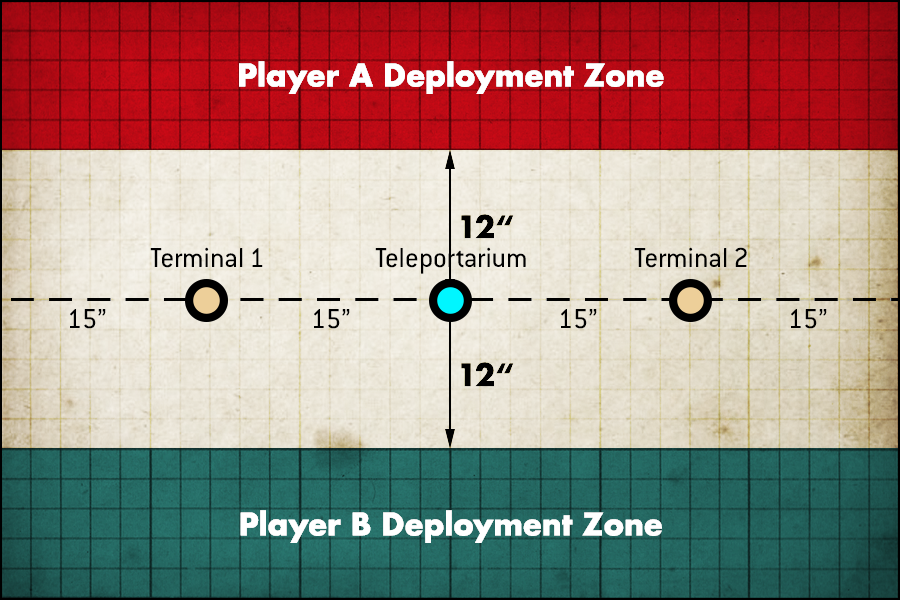
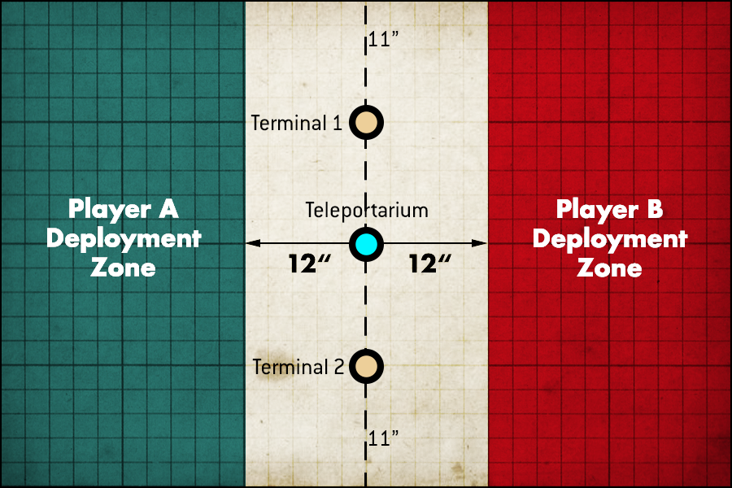

"PROXIMITY SENSORS ACTIVATED: VAULT 634DE-45912."
Do you remember who we are?
These tyrants will build an abyss,
but the rest of us wish to exist.
We're hiding like a shadow in the dark.
- Architects, "Deep Fake"
The video feed inside Vault 424-S342-A appeared completely still. The Watchman briefly thought the feed was malfunctioning, but the sound of dripping water at irregular intervals proved the theory invalid.
Among the thousands of vaults in the subsurface of Gnurn, this room held the only damning information that would lead to his death.
Death. The end of his service. On one hand, his kin would be kept safe should the Teleportarium codes stay hidden from the invaders. On the other, death would be the only thing that could release him from his duty. On another monitor, he issued a mental command to query the life support system status.
2771982 days of vital nutrients remaining. Perhaps a welcoming end.
A rhythmic sound of boots hitting metal echoed through the Watchman's implant, growing louder by the second, increasing in speed and intensity. Aged rusted metal and dirt shook off the wall as multiple low frequency explosions pulsed outside the vault door; a sound the Watchman had not heard in many years: bolter fire.
A screech harmonized with large claws scraping the walls outside of the room, and the bolter fire stopped.
Two steps. Seconds passed. A fist slammed the door. The next strike broke the top hinge. The third freed the door from its frame.
A shadow of thick armor, wide shoulders and red technicolor eyes stood in place of the door, scanning the room intently. The marine's gaze found what he sought; documents, dataslates, and a terminal with all of the necessary information required to enable Marthammor's teleportariums to its core.
He shifted his gaze directly towards the camera. The Watchman felt his gaze. The marine knew he was being watched. He swiftly readied his bolter, and a flash of light was the last frame the Watchman saw before the feed cut out.
A welcoming end, indeed.
MISSION BRIEFING
Players venture towards the final destination in Huthar; Marthammor's artificial moon, X8. The sole intent of this moon is to act as a gate towards the inner sanctum located within Marthammor's core. X8 houses a number of teleportariums, granting direct access to the shield world powered within. Whoever lived in Marthammor before lives on the other side of this structure.
Chapter 4 uses a new custom mission. This mission cannot be found in the Crusade Missions. All mission details are listed below.
MISSION RULES
Eternal Darkness: The planet's lightless surface complicates target acquisition. When resolving an attack, subtract 1 from the hit roll if the target is more than 18" away from the model making the attack.
Details:
- Points: 1250 Strike Force
- Board Size: 44x60
- Command Points: 6 + Crusade Blessings
Setup & Play:
v20230125
1. DETERMINE MISSION
Roll 1d6 and match the dice outcome with the mission table below and write down the mission on your crusade scoring sheet
| D6 | Mission | Terrain |
|---|---|---|
| 1-3 | Dawn of War | Option 2 |
| 4-6 | Hammer and Anvil | Option 1 |
2. Place Terrain and objectives
Terrain location and placement is required for this chapter.
If agreed upon by both players, one player can set up terrain before the battle
Identify the terrain setup for the mission in the table in DETERMINE MISSION
Roll 1d6 to determine who places the first piece of terrain. Take in turn placing terrain. Place each terrain types until all pieces of that type have been placed in the following order:
- Terrain Piece 1 - Large Ruins
- Terrain Piece 2 - Mid Sized Ruins
- Terrain Piece 3 - Tertiary Objective
Objective Markers
Place a Teleportarium in the center of the battlefield. Place two terminals halfway between the Teleportarium and the no-mans-land edge of the battlefield, along the center line, on either side of the Teleportarium.
Dawn of War
Hammer and Anvil
3. Objectives & Agendas
Primary Objectives
Control The Teleportarium (End Game): Score 5 victory points if you control the Teleportarium at the end of the game. Treat the Teleportarium as an objective for the purposes of Objective Secured.
Teleported to Marthammor's Core (End Game): Each time a player's unit is teleported from the battlefield, that player earns a number of victory points relative to that unit's point cost. If the unit is part of a unit that has split into multiple units during the battle, you only receive victory points if every one of those units has been teleported from the battlefield; if any part of the split unit fails to be teleported from the battlefield, no victory points are awarded.
Keep Them Out (Progressive): Score 5 victory points at the end of the battle round if no enemy units have been teleported from the battlefield in this battle round. You cannot score this mission objective in the first or fifth battle round.
Enter the Teleportarium (Action): Any unit from a player's army can start to perform this action at the end of their Movement phase if every model in that unit is within 3" of the Teleportarium. You can only attempt this action once per terminal, per turn, when you have at least 1 unit within 3" of a terminal (maximum twice per turn). Units that were added to your army during the battle cannot attempt this action. The action is completed at the end of your turn. You CANNOT complete this action during the first turn.
If a unit completes this action, remove it from the battlefield — note that it has been teleported from the battlefield and does not count as being destroyed for any reason.
Agendas
Each player then secretly selects Agendas for the battle and writes them down. Each can award experience points to certain units in that player's army, as described on the Agenda itself. Once both players have selected their Agendas, they reveal their selections to their opponent.
Refer to Crusade rules, or your factions codex for additional details
On your crusade scoring sheet write down each players agendas.
4. Determine Attacker and Defender
The players roll off and the winner decides who will be the Attacker and who will be the Defender.
5. Choose Deployment Zone
The deployment maps for some missions will tell you which deployment zone is the Attacker’s and which is the Defender’s. If the deployment map does not show this, but instead labels deployment zones as Player A’s or Player B’s, then the Defender now selects one of the deployment zones for their army. Their opponent uses the other deployment zone.
6. Declare Reserves and Transports
Vox Shroud: Units must deploy wholly within their deployment zones, even if they have an ability that allows them to set up elsewhere. If a unit can move after deployment but before the first turn begins, it must end that move wholly within your deployment zone. Any time a unit is set up on the battlefield, either because it is arriving from Strategic Reserves or Reinforcements or it has been affected by a rule that instructs you to remove the unit and set it back up on the battlefield, it must be set up wholly within your own deployment zone.
7. Deploy Armies
The players alternate setting up their remaining units one at a time, starting with the Defender.
Refer to Ark of Omen for additional details
8. Determine First Turn
Unless the mission briefing says otherwise, the players roll off. The winner takes the first turn.
9. Resolve Pre-battle Abilities
Players alternate resolving any pre-battle abilities units in their army may have, and resolving any Stratagems that are used before the battle, starting with the player who will take the first turn. Remember that Crusade forces can only make use of Stratagems that upgrade units by using Requisition points. Vox Shroud remains in effect.
10. Begin the Battle
The first battle round begins. Players continue to resolve battle rounds until the battle ends.
11. Determine Victor
Primary Objectives
At the end of the battle, the player with the most victory points is the winner. If players are tied, the battle is a draw.
Agendas
Determine agenda scoring per the rules for your army
Victory Bonus
After the battle, the victor can select one unit from their army that has been teleported from the battlefield in the battle (you must select a unit that can gain Battle Honours) - that unit gains one Battle Trait of your choice after the battle (make a note on the unit's Crusade card and increase its Crusade points accordingly).
12. Update Crusade Cards
The players must now update their Crusade cards for all the units they used in the battle
Refer to Crusade rules for additional details
13. Update Order of Battle
Refer to Crusade rules for additional details
14. Notify Crusade Leader
Provide an image of the completed crusade score sheet to Crusade Leader
PLANETARY CONTROL WINNER:
Players of the faction who wins the Planetary Control for the chapter are granted the following bonus: +1/-1 to First Turn Roll in the Final Chapter.